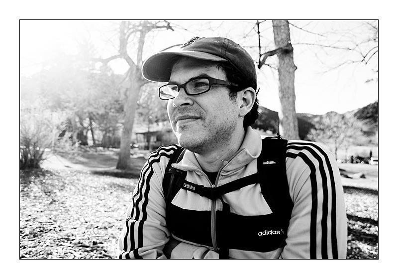
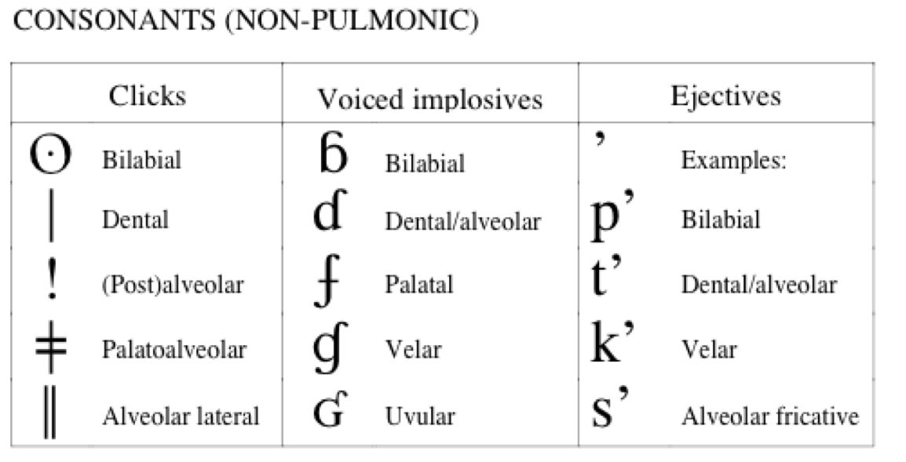
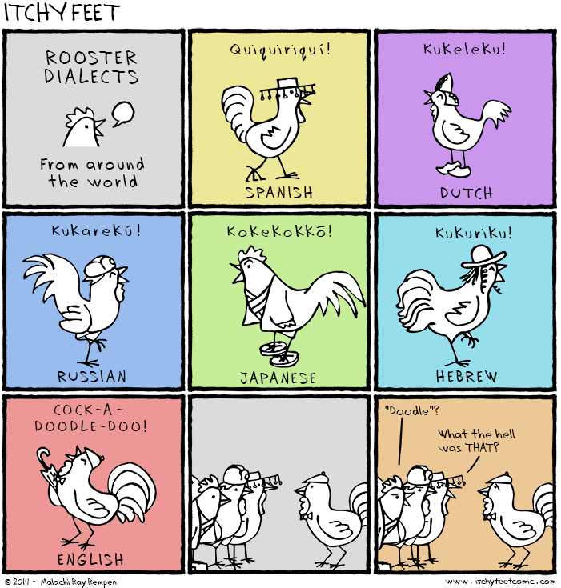
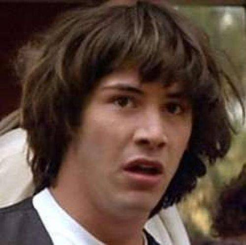

Languages of the World
Will Styler
Dramatis Personae
Will Styler
Instructor

Niloo Khalili
TA - Morning Recitations

Kevin Gould
TA - Afternoon Recitations

Who are you?
What’s your year?
Ling majors?
Monolingual/Bilingual/Multilingual?
What languages do we speak?
There are 7,106 living languages in the world
We’d better get started!
Aari
Classification: Afro-Asiatic, Omotic, South
Spoken in: Ethiopia
Best described in Hayward, Richard J. 1990. Notes on the Aari language. In Hayward, R. J. (ed.), Omotic language studies, 425-493. London: School of Oriental and African Studies.
Aasáx
Classification: Afro-Asiatic, Cushitic, South
Spoken in: Tanzania
Currently being absorbed into Maasai, only 100 speakers left.
Abadi
Classification: Austronesian, Malayo-Polynesian, Central-Eastern Malayo-Polynesian, Eastern Malayo-Polynesian, Oceanic, Western Oceanic, Papuan Tip, Peripheral, Central Papuan, West Central Papuan, Gabadi
Spoken in: Papua New Guinea
Around 4300 speakers and growing, although many speakers also speak Tok Pisin.
What have I done?!?
That would be doing it wrong.
- … but everybody starts off thinking like that
“Oh, you’re a linguist? Cool!”
“How many languages do you speak?”
“Oh, you’re a doctor? Cool!”
“How many diseases do you have?”
Linguists study Language.
(Note the Capital “L”, it’s important)
We study how Language works, how humans use it, and what happens in different languages to get communication done.
Learning about languages can be a part of that, but it’s not the whole!
This class will teach you about Language, by talking about languages.
Goal 1: Learn how linguists talk about Language
Goal 2: Learn about the incredible diversity of language in the world
Goal 3: Learn about the life cycle of languages
Goal 4: Turn you all into Linguists.
Goal 5: Talk about languages!
So, “Languages of the world”…
That’s pretty ambitious.
28 lectures, 7140 languages = 255 languages/day
NOPE!
We’re going to focus on language families and areas
Rather than talking about Spanish, and Italian, and French, and Portuguese, and Romanian, we’ll talk about The Romance Languages
Rather than talking about Hawai’ian, Samoan, Rapa Nui, Tahitian, we might talk about Polynesian Languages
Rather than talking about the 850 languages (!!!) spoken in Papua New Guinea, we’ll just talk about a few of them.
We will abstract to survive
We’ll organize the course by families and areas
We’ll start with some information for your toolkit
Then we’ll talk about areas and language families
We’ll mix in lots of language-specific talks by gigantic nerds
What do I have to do to get an A?
Learn, then prove it.
There are three types of learning you’ll be doing
Learning facts and relationships
“Is German Indo-European or Afro-Asiatic?”
“What morphological feature do most Wakashan languages have in common?”
“Which of the below languages is critically endangered?”
*** Facts are tested in quizzes and exams***
Understanding Concepts and Ideas
“What makes an Ergative language ergative?”
“Why do languages with small consonant inventories have long words?”
“Explain polysynthetic morphology in 250 words or less.”
*** Understanding is shown in exams and homeworks ***
Interacting with languages
“Tell me about Maasai speakers and their culture.”
“Discuss which feature of Turkish you felt was most interesting, and why?”
“Construct a language, and translate”Velociraptors ate my homework” into it.”
*** This interaction happens entirely in homeworks and recitations ***
So, if you want an A…
You’ll learn facts for quizzes and exams
You’ll understand concepts for homeworks and exams
You’ll interact with languages in homeworks and recitations
You’ll pay attention to the syllabus!
Syllabus and Schedule
Questions?
Syllabus Stuff which bears repeating

Check your email!
Come to office hours.
- Skype too!
Buy your clicker before next Wednesday!
We are here to help!
Clickers!
Clicker questions will start counting for points in two weeks
Easy points!
This is a clicker question!
One Answer
Another
A third
The answer is D
I’m not paying attention.
When should you tell Will about any special accomodations you’ll need?
Within the first two weeks
By the end of the semester
When I’m freaking out about my grade in December
I won’t tell him, then pretend I did when it’s an issue in December
When should you tell Will about any special accomodations you’ll need?
Within the first two weeks By the end of the semester
When I’m freaking out about my grade in December
I won’t tell him, then pretend I did when it’s an issue in December
Other Administrative Stuff
- If you’re waitlisted, switch recitations!
Why all the linguistics terms?
Because you need vocabulary to discuss differences intelligently
He grew up to become a young man
haː̣ẃiɬaʎs̃ǐʔaʎ
haː̣-ẃiɬaʎ̃-sǐʎ̃-aʎ̃
young.man-momentive-time-Now
Why bother studying different languages at all?
| ### Because every language is a unique little snowflake |
Languages differ in the sounds they use

|
西施死时四十四 十四是十四 四十是四十 十四不是四十 四十不是十四。 |
Xi shi si shi si shi si Shi si shi shi si Si shi shi si shi Shi si bu shi si shi Si shi bu shi shi si. |
/ɕi ʂi si ʂi si ʂi si ʂi si ʂi ʂi si si ʂi ʂi si ʂi ʂi si bu ʂi si ʂi si ʂi bu ʂi ʂi si./ |
Languages differ in how they put sounds together
‘Strengths’ (/stɹɛŋkθs/)
‘Glance’ - Всгляд (/vzglʲat/)
‘Of Construction’ - строительств (/strʌˈʲitʲɛlʲstf/)
Strč prst skrz krk
‘Stick your finger down your throat’
This means that roosters say different things in different languages

Languages differ in how they work with words
Three cats robbed the shopping mall.
Three cat-s rob-ed the shop-ing mall
Ti’i haskwákiyakirikickichis
(‘Until there was just a little trickle of water’)
Kiyakiicíwa:cé:hirʔasʔirhawi
(‘There was the big buffalo lying there.’)
This language has one speaker left.
(Yeah, it’s not an American Bison, but you google “Surprised Buffalo” and do better)
Languages have different tricks up their sleeves
Repeating a word is useful
piring ‘plate’
piring-piring ‘plates’
rumah ‘house’
rumah-rumah ‘houses’
Reduplicating pronouns makes them snarky
beliau (He/She formal)
Jangan berbuat gaduh di sini, beliau-beliau sedang rapat!
`Don’t be noisy, the big shots are having a meeting!’
`He’s a big, big guy’
`She bought a teeny-tiny bike at Target’
Let’s pretend your name is a really common word, like “Will”
- Solution: Move to Bulgaria!
‘Will’ “Will” (Proper name, Nominative Case)
‘Wille’ “Will” (Vocative case)
Languages have unique terms and structures to discuss the world
‘Sisu’
‘Mamihlapinatapai’
“a look shared by two people, each wishing that the other will offer something that they both desire but are unwilling to suggest or offer themselves.”
[1] This language has one speaker left, and she’s 85.
‘gel-di’ “He came”
‘gel-miş’ “He came, to the best of my knowledge”
‘Bromance’
‘#swag’
‘Bachelor’
Language is incredible
We can “do” communication in countless different ways
The way that we do communication is shaped by our cultures
… and perhaps, it shapes our cultures and thoughts in return

Next time: How are languages born, and how do we group them?
Please read Pereltsvaig Chapter 1 before lecture!
See you all Wednesday!
http://savethevowels.org/world/slides/lotw_1.html